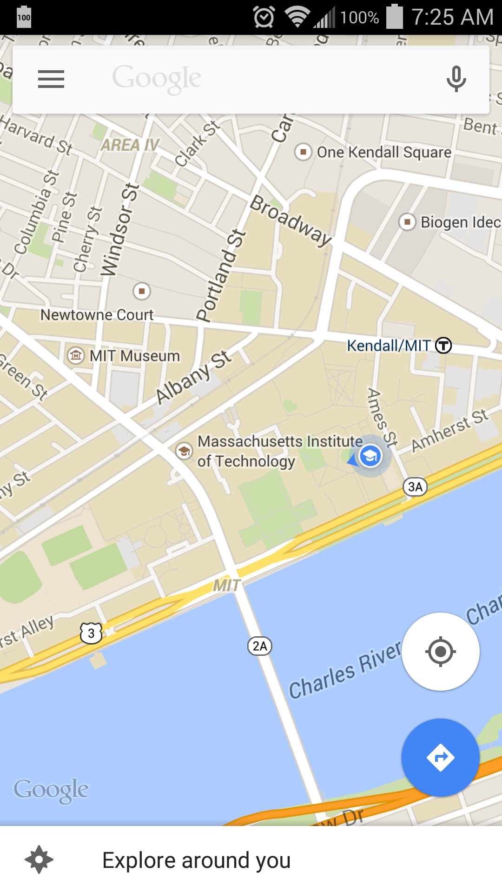
In this tutorial, I learned about using Activity Starter in App Inventor. This app is interesting because it shows how applications in Android can seamlessly open other applications on the mobile device. The change that I made to the Activity Starter app includes the addition of a latitude, longitude, and zoom input boxes on the main screen and a reset button. These changes are documented in the bulleted section below. I encountered no difficulties with the creation of this application. Click the highlighted/underlined link to download the aia file. Scan the QR Code to download the apk.
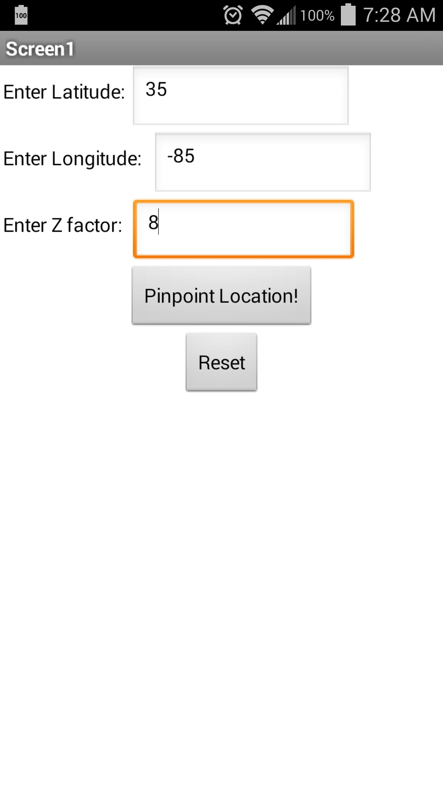
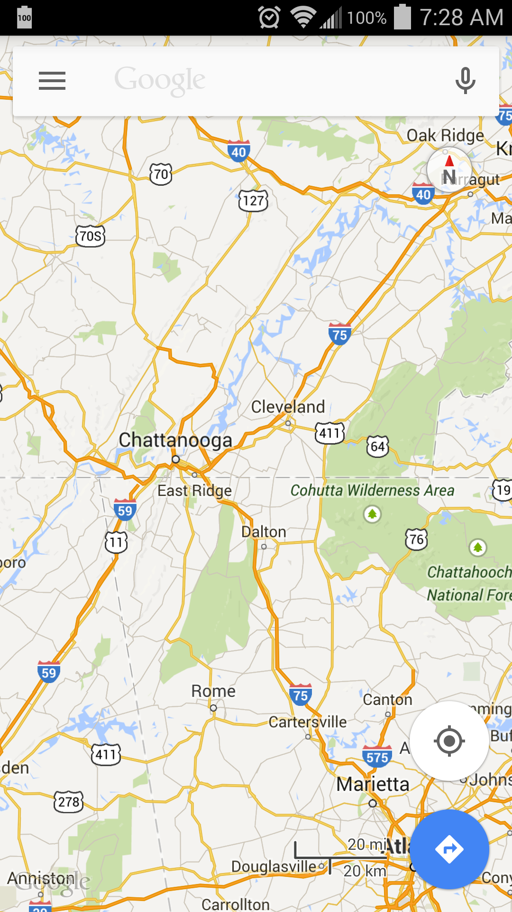
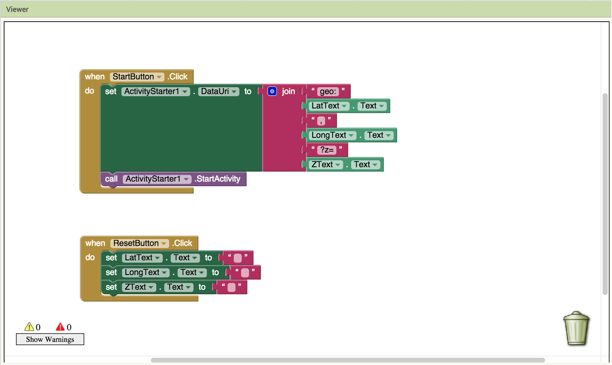
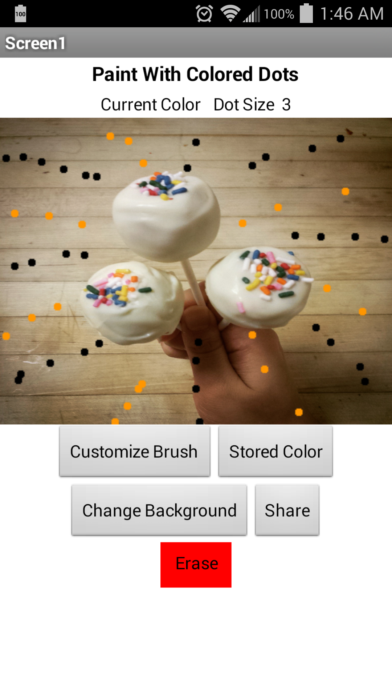
This app is a version of paint, but for the Android phone. In this tutorial, I learned about changing screens and how to save and load files to my Android device. This application is interesting because having "drawing" functionality allows the user to create pictures and images. In terms of modifications to this application, I added the option to upload images to the application and added the ability to share image creations. See the bulleted descriptions following these paragraphs for information on how the changes were incorporated into the Colored Dots application. I encountered no difficulties with screen change management. However, when I first made modifications to the application, I had issues displaying the app on my Emulator and Andriod device. In the end, I learned that I had been working with a broken .aia file. With that in mind, I learned that despite the much faster design and implementation App Inventor 2 allows, it lacks flexibility. Click the highlighted/underlined link to download the aia file. Scan the QR Code to download the apk.
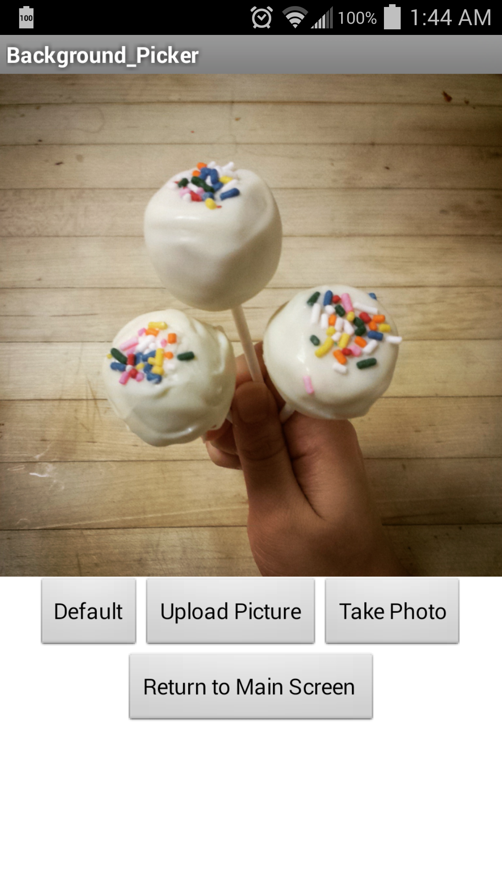
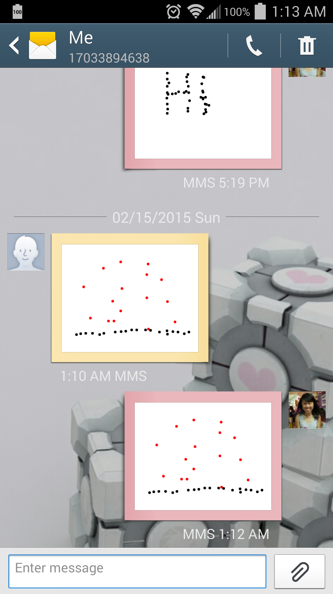
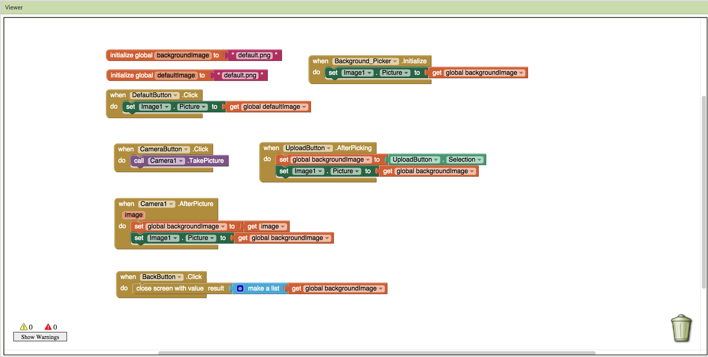

This app gives the user the ability look up basic information about stocks. Edits to this application include the ability for the user to select different options surrounding a particular company's stock. Additionally, this application gives the user the ability to look up the ticker symbol of a desired company. This application is interesting because it allows the user to obtain multiple pieces of information about a company's stock. This is particularly useful if the user merely needs a few key pieces of information, rather than being bombarded with a large amount of data he/she may not find relevant when checking up on a stock for the day. Additionally, if the user does not know the ticker symbol of the company whose stock he/she wishes to obtain, the user can do a quick look up without opening up a separate web browser. Essentially, this application provides simple, quick, and efficient access to stock data. See the bulleted descriptions following these paragraphs for information on how the changes were incorporated into the Stock Quotes application. I had no difficulties when creating this application. Click the highlighted/underlined link to download the aia file. Scan the QR Code to download the apk.
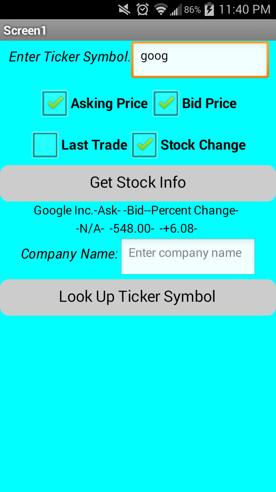
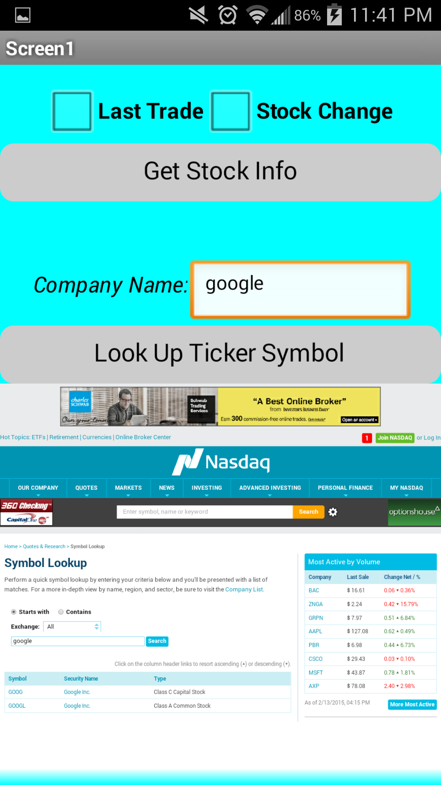
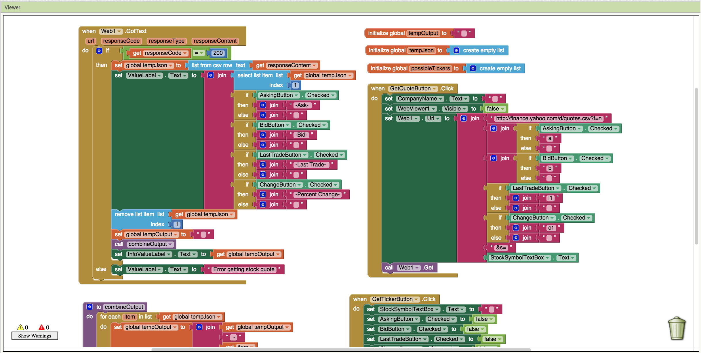
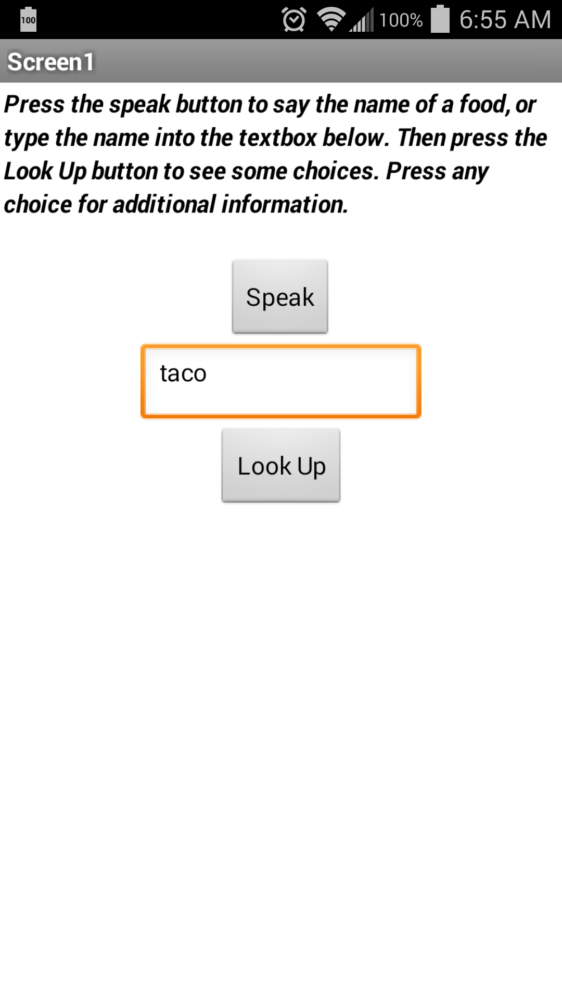
This app gives the user the ability look up calorie info for a particular food item. Instead of giving a ballpark estimate for a particular food, it allows the user to select the brand/restaurant that created the food item. This application allows the user to speak or type in the desired food item. To help motivate healthy eating, the change I incorporated into this application was the ability to "add" food items to a food diary and provided alternatives when too much unhealthy food is consumed. See the bulleted descriptions following these paragraphs for information on how the changes were incorporated into the Food Explorer application. I had difficulty storing multiple pieces of data using the TinyDB. When creating the food diary, I encountered multiple issues trying to store multiple "entries" to my Food Diary. It was difficult to devise a way to maintain the database of multiple food objects. As a result, I decided to instead focus on a single food item. Click the highlighted/underlined link to download the aia file. Scan the QR Code to download the apk.
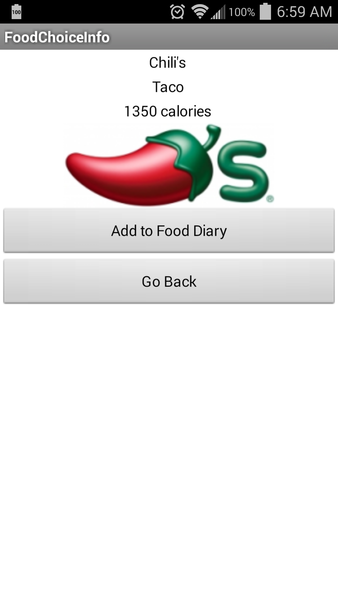
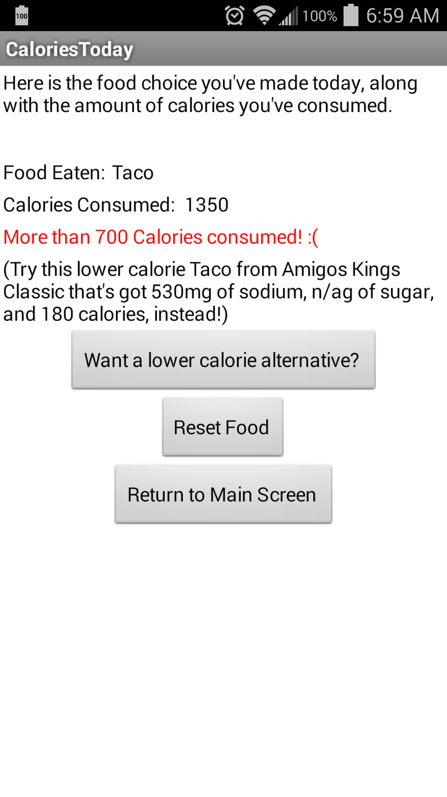
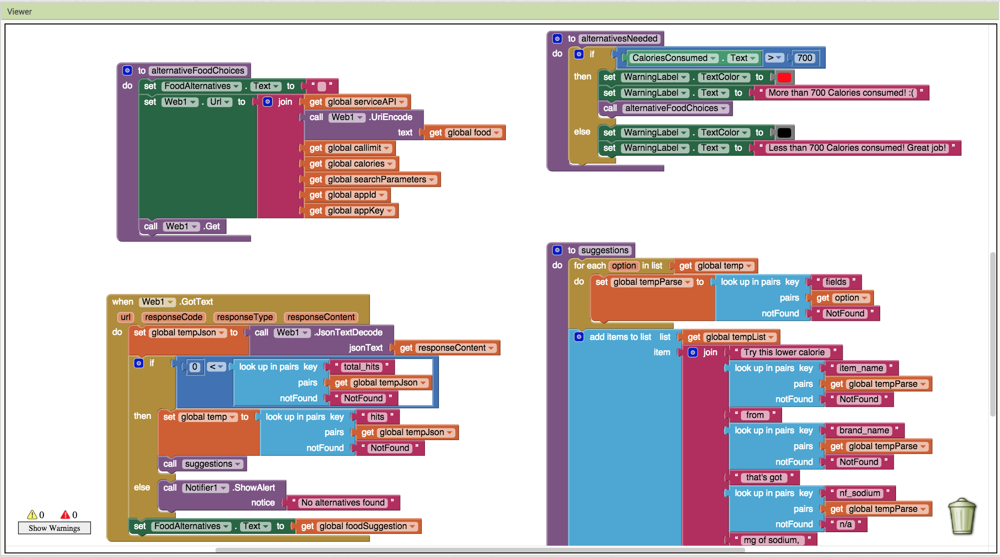